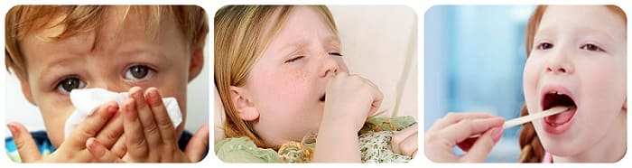

ОРЗ

Еще одно медицинское слово, которое у всех на слуху, – ОРЗ, что расшифровывается как острое респираторное заболевание.
Если врач убежден в том, что насморк, кашель и повышение температуры вызваны вирусом, то он (врач) употребляет уже известное нам понятие ОРВИ. Однако причина все тех же кашля и насморка бывает не совсем понятна или просто некогда разбираться (50 человек в день на приеме в поликлинике и 30 вызовов на дом). В этой ситуации очень удобно говорить про ОРЗ, поскольку понятие «острое респираторное заболевание» объединяет в себе и ОРВИ, и простуды, и обострение хронических инфекций носоглотки, и бактериальные осложнения ОРВИ.
Таким образом, ОРЗ это не болезнь и не диагноз, это специальный термин, который употребляется медицинскими работниками в трех случаях:
1 Когда непонятно.2 Когда некогда.3 Когда не требуется конкретной информации («в городе N существенно выросла заболеваемость ОРЗ», «употребление лука и чеснока – прекрасное средство для профилактики ОРЗ»).***
Определившись с причинами ОРВИ, рассмотрим поподробнее их основные проявления и основные способы лечения, делая при этом акцент на тактике действий родителей.
Но предварительно необходимо отметить следующее.
В подавляющем большинстве случаев организм нормального ребенка, который нормально (естественно) воспитывается, вполне способен к тому, чтобы без всякой посторонней помощи справиться с острой респираторной вирусной инфекцией.
И ГЛАВНАЯ НАША ЗАДАЧА – ОРГАНИЗМУ НЕ МЕШАТЬ!
Почти все проявления болезни – повышение температуры, насморк, кашель, отказ от еды – представляют собой способы борьбы организма с возбудителем инфекции. А современные лекарства могут творить чудеса – мгновенно снизить температуру, «отключить» насморк и кашель и т. д., к сожалению, многие такие лекарства в вашей домашней аптечке есть. Поэтому вы, кое-что зная, попытаетесь облегчить жизнь малышу и себе… А в результате вместо трех дней насморка получите три недели в больнице с воспалением легких. Это я говорю к тому, что, читая написанные ниже рекомендации, особое внимание обращайте на те ваши действия, которые ни в коем случае осуществлять не надо.
Е.О.Комаровский. "Здоровье ребенка"